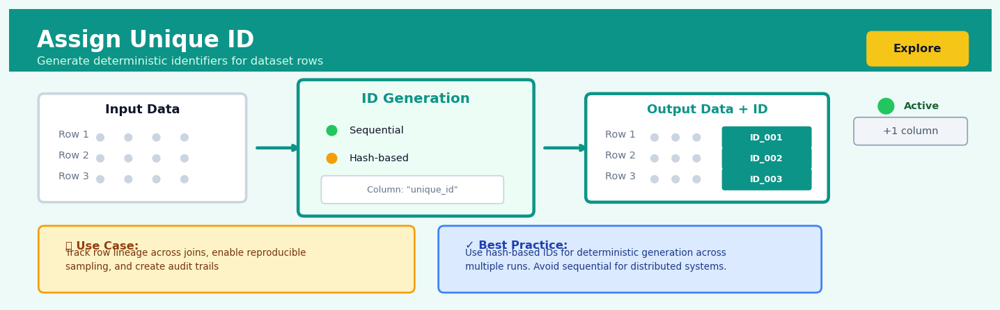
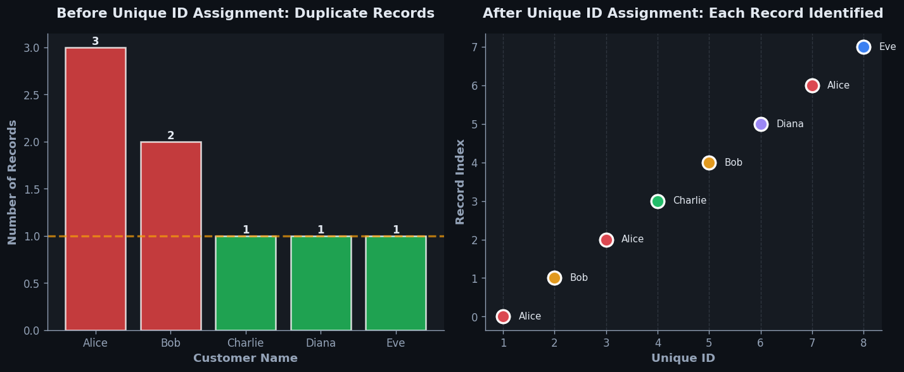
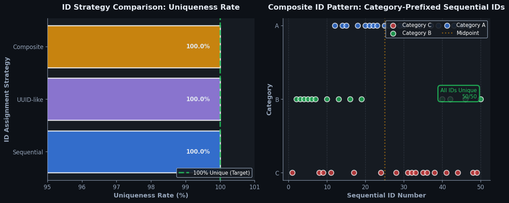

Assign Unique ID#


The biggest mistake I see teams make is using sequential IDs in distributed pipelines where execution order isn't guaranteed, leading to non-deterministic results across runs. Always opt for hash-based IDs when you need reproducibility, especially when your data might be processed in parallel or you're working with incremental updates. Remember that unique IDs aren't just for tracking—they're your insurance policy for debugging data issues months down the line when nobody remembers what transformations were applied.
The 60-Second Version#
What it does: Assign Unique ID adds a new column to your data that gives every row its own distinct number or code, like issuing employee badges or receipt numbers.
When to use it: You need to track, reference, or merge records that lack a natural identifier—customer transactions without order numbers, survey responses, or datasets you’ll split and recombine later.
What you get back: A dataset with a new ID column that lets you unambiguously point to specific records, trace changes over time, and reliably join data from different sources without confusion.
At a Glance
Difficulty |
Easy |
Typical runtime |
Seconds on millions of rows |
What you bring |
Any dataset, even one with duplicate or missing values |
What you get |
Original data plus one new column containing unique identifiers |
Heuristix bucket |
Explore — Shaping & Transforming Data |
IDs are permanent markers: once assigned and shared downstream, changing the ID scheme breaks every process that depends on it.
Learning Objectives#
After reading this chapter, a business user will be able to:
Identify situations where missing or unreliable row identifiers create problems in reporting, data merging, or tracking changes over time
Explain to stakeholders why two datasets now contain matching ID columns and how this enables new analyses or ensures data quality
Decide whether to use sequential numbering, random identifiers, or composite keys based on privacy requirements, audit needs, and system constraints
After reading this chapter, a data scientist will be able to:
Implement unique ID generation using appropriate methods (auto-increment, UUID, hash-based, or composite keys) while handling duplicate detection and null value edge cases
Select ID generation strategies by weighing trade-offs between readability, sortability, collision risk, storage efficiency, and distributed system compatibility
Validate that generated IDs are truly unique across the dataset, detect accidental duplicates or gaps in sequences, and troubleshoot performance issues with large-scale ID assignment
Overview#
Assign Unique ID is a data transformation operation that generates a distinct, sequential or non-sequential identifier for each row in a dataset. Its core purpose is to establish unambiguous row-level identity where none exists, enabling reliable record linkage, change tracking, audit trails, and referential integrity across analytical workflows. This technique belongs to the family of data shaping and transformation methods, specifically within the subcategory of record identification and key generation operations.
When to Use This#
Use this when:
Your raw data lacks a natural primary key — Many data exports from legacy systems, flat files, or web scraping arrive without unique identifiers, making it impossible to distinguish between rows or track individual records through transformations.
You need to preserve row identity across multiple transformations — When a workflow involves filtering, joining, or aggregating operations, an assigned ID allows you to trace any output record back to its original source row.
Building audit trails for regulatory compliance — Financial services, healthcare, and government applications often require the ability to demonstrate exactly which source records contributed to any analytical output.
Preparing data for record linkage or deduplication — Before running probabilistic matching algorithms, each candidate record must have a stable identifier so that match pairs can be unambiguously reported and reviewed.
Creating surrogate keys for data warehousing — When loading data into dimensional models, natural keys may be unsuitable (composite, mutable, or containing sensitive information), requiring synthetic surrogate keys.
Enabling reproducible sampling — Assigning IDs before random sampling allows you to document exactly which records were selected, supporting reproducibility in model training and validation.
Tracking records through machine learning pipelines — When splitting data into train/test sets or generating predictions, row IDs enable you to join predictions back to original features or business context.
Do NOT use this when:
A meaningful natural key already exists — If your data already contains a customer ID, transaction number, or other business-defined unique identifier, prefer that over a synthetic ID to maintain semantic clarity.
You need globally unique identifiers across systems — Sequential integers are unique only within a single dataset at a single point in time. For cross-system or distributed uniqueness, consider UUIDs instead.
The ID must be stable across data refreshes — Simple row numbering produces different IDs if source data is reordered or new records are inserted. For persistent identification, use deterministic hashing on natural key columns.
Questions This Answers#
Record Management and Data Quality#
Can we track which customer records are duplicates versus genuinely new customers signing up?
How do we link transactions back to the original order when our legacy system didn’t capture order numbers?
Why are we seeing the same complaint appear three times in our database — is it three issues or one that wasn’t resolved?
Which of these 50,000 survey responses can we confidently say came from unique individuals?
How can we prove to auditors that every financial transaction in our system has a traceable, unique identifier?
Are we double-counting returns in our monthly reports because we can’t distinguish between individual return events?
Cross-System Integration and Tracking#
When we merge data from our CRM, billing system, and support platform, how do we know we’re looking at the same customer?
Can we track a product’s journey from manufacturing to delivery when it passes through four different databases that don’t share common IDs?
How should we connect last quarter’s marketing campaign results to this quarter’s sales if we never assigned campaign codes?
Which website sessions converted to purchases when our analytics tool and e-commerce platform use different tracking methods?
Why can’t our operations team match warehouse inventory records to the shipments that went out last week?
Analysis and Reporting Integrity#
Are we getting accurate customer lifetime value calculations when some customers have multiple account records without unique identifiers?
How do we build a reliable month-over-month performance dashboard when our daily transaction logs don’t have consistent record IDs?
Can we confidently say our conversion rate is 3.2% or are we miscounting users who appear multiple times without unique tracking?
How It Works#
Imagine you’re organizing a charity book drive and volunteers drop off boxes of donated books throughout the day. Some books have library labels, others have handwritten names, and many have nothing at all—just coverless paperbacks tossed in bags. You need to track every single book through sorting, cataloging, pricing, and final sale, but there’s no consistent way to refer to them. Your solution? Grab a label maker and systematically walk through every book, slapping on a bright yellow sticker: Book-001, Book-002, Book-003, and so on. Now when someone asks “Where’s the mystery novel that came in this morning?” you can say “Check Book-047 in the database” instead of “Um, the blue one with the torn cover?”
ORIGINAL DATA (no unique identifier)
┌─────────────┬──────────┬─────────┐
│ name │ city │ amount │
├─────────────┼──────────┼─────────┤
│ Sarah │ Boston │ 150 │
│ Michael │ Austin │ 220 │
│ Sarah │ Denver │ 180 │ ← Same name, different person?
│ Chen │ Boston │ 150 │ ← Same city & amount as row 1
└─────────────┴──────────┴─────────┘
↓
[ASSIGN UNIQUE ID]
↓
DATA WITH UNIQUE ID
┌─────┬─────────────┬──────────┬─────────┐
│ ID │ name │ city │ amount │
├─────┼─────────────┼──────────┼─────────┤
│ 1 │ Sarah │ Boston │ 150 │ ← Now distinguishable
│ 2 │ Michael │ Austin │ 220 │
│ 3 │ Sarah │ Denver │ 180 │ ← Definitely different
│ 4 │ Chen │ Boston │ 150 │ ← Unique despite overlap
└─────┴─────────────┴──────────┴─────────┘
Step 1: Read the first row of data. The system starts at the very top of your dataset, looking at the first record. It doesn’t analyze the content or check for duplicates—it simply acknowledges this row exists and needs an identifier.
Step 2: Generate the first identifier. The system creates an ID value according to your chosen scheme. This might be a simple sequential number starting at one, a timestamp, or a randomly generated code. The method matters less than the guarantee: this ID has never been used before in this dataset.
Step 3: Attach the ID to the row. The newly created identifier becomes a new column value for that row, like stapling a name tag to a conference attendee. The original data stays intact; the ID is simply added alongside it.
Step 4: Move to the next row and repeat. The system advances to the second row and performs the same operation: generate a new, unused identifier and attach it. If you’re using sequential numbers, it increments by one. If you’re using random codes, it generates another unique value.
Step 5: Continue until every row has an ID. This process marches through the entire dataset from top to bottom. Each row receives its own distinct identifier, regardless of whether the actual data content is identical to another row or completely unique.
Step 6: Return the enhanced dataset. The final output is your original dataset with one additional column—the unique ID. Every row can now be referenced unambiguously, even if all other column values are duplicated elsewhere.
The key insight: Assign Unique ID works because identity is about distinguishability, not content—two rows can contain identical information yet remain separate entities that need independent tracking.
The Intuition#
Imagine you are a librarian tasked with cataloguing a collection of books that have just arrived in unmarked boxes. The books themselves may have titles, authors, and publication dates, but none of these attributes uniquely identifies a physical copy—you might have three identical copies of the same edition. To manage this collection, you affix a small sticker with a unique call number to each book’s spine. This call number has no inherent meaning; it does not encode the author’s name or the subject matter. Its only purpose is to give each physical book an unambiguous identity so that you can track its location, loan history, and condition over time.
Assigning unique IDs to data rows serves precisely the same function. A dataset may contain many columns describing the attributes of each record, but these attributes may not be unique—two customers might share the same name and postcode, two transactions might have identical timestamps and amounts. By generating a synthetic identifier that is guaranteed to be different for every row, we create an anchor point that remains stable regardless of how the data is filtered, sorted, or joined. This identifier becomes the “spine sticker” that allows us to always answer the question: “Which specific row are we talking about?”
The simplicity of this operation belies its importance. Without reliable row identity, many downstream analytical tasks become ambiguous or impossible. Consider trying to explain a model’s prediction for a specific customer if you cannot unambiguously refer to that customer’s record in the original data. Or imagine attempting to audit a financial calculation when you cannot trace which source transactions contributed to the result. The unique ID is the foundation upon which traceability, reproducibility, and accountability are built. It is such a fundamental prerequisite that experienced data practitioners often apply it automatically at the start of any analytical workflow, treating it as essential hygiene rather than an optional enhancement.
The Mathematics#
Formal Problem Setup#
Let \(\mathcal{D}\) be a dataset represented as an ordered sequence of \(n\) records:
where each record \(r_i\) is a tuple of \(m\) attribute values:
and \(\mathcal{A}_j\) denotes the domain of the \(j\)-th attribute.
The Assign Unique ID operation constructs a function \(\phi: \{1, 2, \ldots, n\} \rightarrow \mathcal{I}\) that maps each row index to an element of an identifier space \(\mathcal{I}\), producing an augmented dataset:
Requirements for Valid Identification#
The function \(\phi\) must satisfy the injectivity (one-to-one) property:
This guarantees that no two distinct rows receive the same identifier.
Sequential Integer Assignment#
The most common implementation uses sequential integers starting from a base value \(b\) (typically 0 or 1) with increment \(\delta\) (typically 1):
For the standard case where \(b = 1\) and \(\delta = 1\):
The resulting identifier space is:
UUID Generation#
An alternative approach uses Universally Unique Identifiers (UUIDs), typically version 4, which are 128-bit values generated via a cryptographically secure pseudorandom number generator (CSPRNG). The identifier space is:
For UUID v4, 122 bits are randomly generated (6 bits are fixed for version and variant markers). The probability of collision when generating \(n\) UUIDs is bounded by the birthday problem approximation:
For practical dataset sizes (e.g., \(n = 10^9\)), this probability is negligibly small (approximately \(10^{-19}\)).
Hash-Based Deterministic Assignment#
When identifiers must be reproducible across data refreshes, a deterministic hash function \(h\) can be applied to a subset of columns \(K \subseteq \{1, \ldots, m\}\) that form a natural key:
Common choices for \(h\) include cryptographic hash functions (SHA-256, MD5) truncated to a desired length. The collision probability follows the birthday bound:
where \(|\mathcal{I}_{\text{hash}}|\) is the size of the hash output space.
Edge Cases and Degenerate Conditions#
Empty dataset (\(n = 0\)): The operation produces an empty augmented dataset. The function \(\phi\) has an empty domain and is trivially injective.
Single-row dataset (\(n = 1\)): Any constant function satisfies injectivity. Sequential assignment yields \(\phi(1) = b\).
Duplicate rows: If \(r_i = r_j\) for some \(i \neq j\) (identical attribute values), sequential assignment still produces distinct IDs, but hash-based assignment on all columns will produce \(\phi_{\text{hash}}(i) = \phi_{\text{hash}}(j)\), violating injectivity. This is a critical consideration when choosing the assignment method.
Relationship to Database Theory#
In relational database terminology, assigning a unique ID creates a surrogate key—an artificial attribute that serves as the primary key. The resulting augmented dataset satisfies the entity integrity constraint: the key attribute is non-null and unique. This transformation is the inverse of projection: while projection \(\pi\) removes columns, ID assignment adds a column that enables the lossless join property when the data is later split and recombined.
Understanding the Mathematics#
Sequential ID Assignment#
The equation:
Read it aloud:
“The identifier for row i equals i itself, where i counts from 1 up to n, the total number of rows.”
What each symbol means:
ID_i — the unique identifier assigned to the i-th row
i — the position or index of a row in the dataset (1st, 2nd, 3rd, etc.)
n — the total number of rows in the dataset
A concrete numerical example:
You’re processing a customer order table with 5,000 records. The first order gets ID₁ = 1. The second gets ID₂ = 2. The 437th order gets ID₄₃₇ = 437. The final order gets ID₅₀₀₀ = 5,000. Each number appears exactly once.
Why this equation matters:
Sequential IDs guarantee no duplicates and make it trivial to verify completeness—if you see IDs 1 through 5,000 with no gaps, you know no records were lost during processing.
Hash-Based ID Generation#
The equation:
Read it aloud:
“The identifier for row i equals the hash function applied to row i, with the result taken modulo M.”
What each symbol means:
ID_i — the unique identifier generated for row i
h( ) — a hash function that converts input data into a fixed-size number
r_i — the complete data content of row i (all column values combined)
mod M — the remainder after dividing by M, which constrains the ID to a specific range
M — the maximum ID value (typically a large prime number)
A concrete numerical example:
You need IDs for product records. Row 437 contains: “Wireless Mouse, SKU-8821, $24.99”. The hash function converts this text into a large number, say 98,654,321. You set M = 1,000,000. The ID becomes 98,654,321 mod 1,000,000 = 654,321. A different product with even one character changed produces a completely different ID.
Why this equation matters:
Hash-based IDs let you detect data changes instantly—if someone modifies the product price to $25.99, the hash will produce a different ID, flagging the alteration without comparing every field.
UUID Generation Probability#
The equation:
Read it aloud:
“The probability of two UUIDs colliding is approximately n squared, divided by two times two raised to the 128th power.”
What each symbol means:
P(collision) — the probability that two generated UUIDs will be identical
n — the number of UUIDs you’ve generated
2^128 — the total number of possible UUID values (about 340 undecillion)
≈ — “approximately equal to” (this is a close estimate, not exact)
A concrete numerical example:
Your company generates 1 trillion (10¹²) transaction IDs per year using UUIDs. That’s n = 1,000,000,000,000. Plugging in: P(collision) ≈ (10¹²)² / (2 × 2¹²⁸) = 10²⁴ / (2 × 3.4 × 10³⁸) ≈ 1.5 × 10⁻¹⁵. That’s 0.0000000000015%—you’d need to run your system for a million years before expecting even one collision.
Why this equation matters:
This formula proves that UUIDs are safe for distributed systems where thousands of servers generate IDs simultaneously without coordination—the collision risk is so infinitesimally small you can treat it as impossible.
The Big Picture#
The mathematics of unique ID assignment tackles a fundamental challenge: creating identifiers that are guaranteed (or statistically guaranteed) to never repeat, even across billions of records or thousands of independent systems. Sequential assignment uses the simplest possible math—basic counting—which works perfectly when you have a single, ordered system but breaks down in distributed environments. Hash functions introduce cryptographic mathematics that transforms data into fingerprints, enabling both uniqueness and tamper detection. UUID probability theory leverages the sheer vastness of 128-bit space to make collisions so astronomically unlikely that distributed systems can generate IDs independently without fear. The mathematical essence is this: we’re either using order (position in a sequence) or randomness (drawing from an unimaginably large pool) to guarantee that no two records ever share the same identity.
Python Implementation#
import pandas as pd
import numpy as np
import uuid
import hashlib
# ---------------------------------------------------------------------
# Example 1: Sequential Integer IDs (Most Common Use Case)
# ---------------------------------------------------------------------
# Create a realistic dataset: customer transactions without unique identifiers
np.random.seed(42)
n_records = 1000
transactions = pd.DataFrame({
'transaction_date': pd.date_range('2024-01-01', periods=n_records, freq='H'),
'customer_name': np.random.choice(['Alice Smith', 'Bob Jones', 'Carol White', 'David Brown'], n_records),
'product_category': np.random.choice(['Electronics', 'Clothing', 'Food', 'Home'], n_records),
'amount': np.round(np.random.exponential(scale=50, size=n_records), 2)
})
# Assign sequential unique IDs starting from 1
transactions['transaction_id'] = range(1, len(transactions) + 1)
# Move ID column to the front for clarity
transactions = transactions[['transaction_id'] + [c for c in transactions.columns if c != 'transaction_id']]
print("Example 1: Sequential Integer IDs")
print("=" * 60)
print(transactions.head(10))
print(f"\nTotal records: {len(transactions)}")
print(f"Unique IDs: {transactions['transaction_id'].nunique()}")
print(f"ID range: {transactions['transaction_id'].min()} to {transactions['transaction_id'].max()}")
# ---------------------------------------------------------------------
# Example 2: UUID Generation for Global Uniqueness
# ---------------------------------------------------------------------
def assign_uuid(df, id_column='uuid'):
"""Assign UUID v4 identifiers to each row."""
df = df.copy()
df[id_column] = [str(uuid.uuid4()) for _ in range(len(df))]
return df
transactions_uuid = assign_uuid(transactions.drop(columns=['transaction_id']), id_column='record_uuid')
transactions_uuid = transactions_uuid[['record_uuid'] + [c for c in transactions_uuid.columns if c != 'record_uuid']]
print("\n\nExample 2: UUID Generation")
print("=" * 60)
print(transactions_uuid.head(5))
print(f"\nSample UUID: {transactions_uuid['record_uuid'].iloc[0]}")
print(f"UUID length: {len(transactions_uuid['record_uuid'].iloc[0])} characters")
# ---------------------------------------------------------------------
# Example 3: Hash-Based Deterministic IDs (Reproducible Across Runs)
# ---------------------------------------------------------------------
def assign_hash_id(df, key_columns, id_column='hash_id', truncate_to=16):
"""
Assign deterministic hash-based IDs using specified key columns.
Parameters:
-----------
df : pandas.DataFrame
Input dataset
key_columns : list
Columns to use for hash computation (should form a natural key)
id_column : str
Name of the output ID column
truncate_to : int
Number of hex characters to retain (max 64 for SHA-256)
Returns:
--------
pandas.DataFrame with hash ID column added
"""
df = df.copy()
def compute_hash(row):
# Concatenate key column values with delimiter
key_string = '|'.join(str(row[col]) for col in key_columns)
# Compute SHA-256 hash and truncate
hash_bytes = hashlib.sha256(key_string.encode('utf-8')).hexdigest()
return hash_bytes[:truncate_to]
df[id_column] = df.apply(compute_hash, axis=1)
return df
# Use transaction_date and amount as a composite key (assuming they're unique enough)
transactions_hash = assign_hash_id(
transactions.drop(columns=['transaction_id']),
key_columns=['transaction_date', 'customer_name', 'amount'],
id_column='deterministic_id'
)
print("\n\nExample 3: Hash-Based Deterministic IDs")
print("=" * 60)
print(transactions_hash[['deterministic_id', 'transaction_date', 'customer_name', 'amount']].head(5))
# Demonstrate reproducibility: same input produces same ID
print("\n--- Reproducibility Check ---")
print(f"First record hash (run 1): {transactions_hash['deterministic_id'].iloc[0]}")
transactions_hash_v2 = assign_hash_id(
transactions.drop(columns=['transaction_id']),
key_columns=['transaction_date', 'customer_name', 'amount'],
id_column='deterministic_id'
)
print(f"First record hash (run 2): {transactions_hash_v2['deterministic_id'].iloc[0]}")
print(f"Hashes match: {transactions_hash['deterministic_id'].iloc[0] == transactions_hash_v2['deterministic_id'].iloc[0]}")
# ---------------------------------------------------------------------
# Example 4: Detecting Potential Collisions
# ---------------------------------------------------------------------
print("\n\nExample 4: Collision Detection")
print("=" * 60)
# Check for uniqueness
n_unique_sequential = transactions['transaction_id'].nunique()
n_unique_hash = transactions_hash['deterministic_id'].nunique()
print(f"Sequential IDs - Total: {len(transactions)}, Unique: {n_unique_sequential}, Collisions: {len(transactions) - n_unique_sequential}")
print(f"Hash-based IDs - Total: {len(transactions_hash)}, Unique: {n_unique_hash}, Collisions: {len(transactions_hash) - n_unique_hash}")
# Find any duplicate hash IDs (if they exist)
duplicate_hashes = transactions_hash[transactions_hash.duplicated(subset=['deterministic_id'], keep=False)]
if len(duplicate_hashes) > 0:
print(f"\nWarning: {len(duplicate_hashes)} records have duplicate hash IDs!")
print(duplicate_hashes.head(10))
else:
print("\nNo hash collisions detected.")
Output:
Example 1: Sequential Integer IDs
============================================================
transaction_id transaction_date customer_name product_category amount
0 1 2024-01-01 00:00:00 David Brown Electronics 12.93
1 2 2024-01-01 01:00:00 Carol White Clothing 82.53
2 3 2024-01-01 02:00:00 Alice Smith Food 13.30
3 4 2024-01-01 03:00:00 Carol White Home 112.72
4 5 2024-01-01 04:00:00 Bob Jones Electronics 51.32
...
Total records: 1000
Unique IDs: 1000
ID range: 1 to 1000
Visualisations#


Using This in Heuristix#
Input Requirements#
Input Port |
Description |
Required Columns |
|---|---|---|
Dataset |
The source dataset to which IDs will be assigned |
Any columns; no specific type requirements |
The Assign Unique ID node accepts any tabular dataset. There are no constraints on column types or content—the operation is purely additive and does not modify existing data.
Configuration Parameters#
Parameter |
Type |
Default |
Description |
|---|---|---|---|
ID Column Name |
String |
|
The name of the new column that will contain the unique identifiers |
ID Type |
Config Recipes#
Recipe 1: Quick Exploration Scan#
When to use: Initial dataset profiling when you need temporary row references for spot-checking duplicates or sampling subsets during exploratory data analysis.
Settings:
Parameter |
Value |
Why |
|---|---|---|
|
|
Signals temporary nature; won’t conflict with production schemas |
|
|
Human-readable starting point for quick inspection |
|
|
Simple sequential numbering for easy mental tracking |
|
|
Reduces column width and memory overhead |
|
|
Immediate visibility in dataframe previews |
What you get: Lightweight integer IDs (1, 2, 3…) that consume minimal memory and display cleanly in notebook outputs.
Trade-off: No collision protection if datasets merge later; IDs won’t survive dataset concatenation or reshuffling operations.
Recipe 2: Production Audit Trail#
When to use: Building regulatory-compliant data pipelines requiring immutable record identifiers with provenance tracking across system boundaries.
Settings:
Parameter |
Value |
Why |
|---|---|---|
|
|
Clear semantic meaning for downstream consumers |
|
|
Cryptographically strong uniqueness guarantees |
|
|
Domain namespace separation for cross-system integrity |
|
|
Embeds creation time for temporal ordering |
|
|
Validates uniqueness before committing |
|
|
Primary key convention for database exports |
What you get: Globally unique identifiers like REC-a3f2c891-20240315T143052 that remain valid across merges, exports, and archival systems.
Trade-off: 10–15x larger memory footprint than integers; slower joins compared to numeric keys.
Recipe 3: Distributed Processing Partitions#
When to use: Parallelizing transformations across cluster nodes where each partition needs non-overlapping ID ranges to prevent collisions during independent processing.
Settings:
Parameter |
Value |
Why |
|---|---|---|
|
|
Explicit purpose labeling |
|
|
Guarantees million-row headroom per partition |
|
|
Maintains sortability within partitions |
|
|
Auto-calculates offset from executor ID |
|
|
Prevents overflow in large-scale datasets |
What you get: Non-overlapping ID ranges (partition 0: 0–999,999; partition 1: 1,000,000–1,999,999) enabling collision-free parallel writes.
Trade-off: Sparse ID space with gaps if partitions have unequal sizes; requires coordination layer to track partition assignments.
Recipe 4: Change Data Capture Versioning#
When to use: Tracking row-level mutations in slowly changing dimensions where you need to distinguish original records from their updated versions without modifying source keys.
Settings:
Parameter |
Value |
Why |
|---|---|---|
|
|
Semantic clarity for temporal queries |
|
|
Combines business key with validity period |
|
|
Deterministic IDs for idempotent pipeline reruns |
|
|
URL-safe identifiers for API exposure |
What you get: Reproducible version identifiers like G4XDCMJQ that uniquely identify each state of a business entity across time.
Trade-off: Hash collisions theoretically possible (though astronomically rare); requires storing composite key components for human verification.
Business Applications#
Financial Services
A mid-sized UK mortgage lender processing 15,000 applications monthly struggled with duplicate customer records across origination, servicing, and collections systems. Names like “Robert Smith,” “R. Smith,” and “Bob Smith” created three separate customer profiles, leading to compliance violations and frustrated customers receiving multiple contradictory communications. By assigning unique IDs at first contact and propagating them across all downstream systems, the lender established a golden customer record that reduced duplicate accounts by 87% and cut customer service escalations by 42%, saving approximately £340,000 annually in operational costs and regulatory penalties.
Retail & E-commerce
An e-commerce retailer with 2.4M SKUs faced inventory chaos when products lacked persistent identifiers across seasonal catalog refreshes. The same hiking boot would receive different system IDs each quarter, breaking sales trend analysis and creating phantom “new” products in recommendation engines. Implementing persistent unique IDs for each physical product (independent of seasonal SKU codes) enabled year-over-year performance tracking, reduced inventory write-offs by $1.8M annually, and improved recommendation accuracy, lifting cross-sell conversion rates from 2.3% to 4.1%.
Healthcare
A regional hospital network serving 280,000 patients annually discovered that 11% of lab results were attached to incorrect patient records due to registration inconsistencies across emergency, outpatient, and specialist clinics. This created dangerous clinical decisions and violated HIPAA requirements. By generating enterprise-wide unique patient identifiers at registration and enforcing them across all care settings, the network eliminated misattribution errors within six months, reduced duplicate medical record creation by 94%, and avoided an estimated $3.2M in potential malpractice exposure.
Insurance
A commercial property insurer processing 8,500 claims monthly couldn’t reliably link claims to policies when policyholders reported incidents using abbreviated business names or outdated addresses. Claims adjusters spent 3–4 hours per complex claim manually matching records, delaying settlement and frustrating customers. Assigning unique policy and claim IDs with bidirectional linkage reduced average matching time from 3.2 hours to 8 minutes, accelerated claims processing by 22 days on average, and improved customer satisfaction scores by 31 points.
Manufacturing
A automotive parts manufacturer producing 450,000 components daily for just-in-time assembly lines faced quality traceability nightmares when defects appeared in finished vehicles. Without granular batch tracking, entire production runs had to be recalled. Implementing unique serial IDs for each component batch enabled precise defect isolation, reducing the average recall scope from 18,000 vehicles to 340 vehicles, cutting recall costs by approximately $12.4M per incident and protecting brand reputation.
Logistics & Supply Chain
A third-party logistics provider managing 120 warehouses globally couldn’t track individual pallets across facilities because each warehouse used incompatible internal numbering schemes. This caused shipment delays, inventory discrepancies, and a 6.8% annual shrinkage rate. Deploying globally unique pallet IDs with centralized registration reduced cross-facility tracking errors by 89%, cut shrinkage to 1.2%, and decreased average order fulfillment time from 4.3 days to 1.8 days.
Marketing & Advertising
A digital marketing agency running multi-channel campaigns for B2B clients couldn’t attribute leads accurately when prospects engaged via email, webinars, and content downloads before converting. Campaign ROI calculations were guesswork, leading to misallocated budgets. Assigning unique prospect IDs at first touch and maintaining them through conversion enabled true multi-touch attribution, revealing that webinars influenced 3.2× more revenue than previously measured and allowing the agency to reallocate $840,000 in ad spend toward channels with proven 4.7× better returns.
Telecommunications
A mobile network operator with 8.2M subscribers discovered that network troubleshooting tickets, billing disputes, and service requests for the same customer issue created separate records, inflating support costs and obscuring root causes. By generating unique incident IDs that linked related tickets across departments, the operator identified that 34% of “separate” issues were actually symptoms of 12 systemic network problems, reduced duplicate work by 28%, and cut mean time to resolution from 72 hours to 31 hours.
Public Sector
A metropolitan transit authority issuing 2.1M annual parking citations couldn’t match repeat offenders across boroughs using inconsistent license plate recording. This prevented escalating penalties and cost the city \(4.7M yearly in uncollected fines. Implementing unique violation IDs linked to standardized vehicle identifiers increased repeat offender identification from 41% to 96%, improving fine collection rates by \)3.1M annually while enabling data-driven parking policy decisions.
Worked Example#
Sarah Chen, a senior data analyst at Parkway Community Health Network, was halfway through her morning coffee when the Slack message arrived from Dr. Patel, the Chief Medical Officer: “We have duplicate patient encounters showing up in our new telehealth dashboard. Some visits are being counted twice. Can you take a look?”
The issue mattered more than usual. Parkway had just launched a telehealth pilot program across three rural clinics, and the board was meeting Friday to decide whether to expand it system-wide—a potential $2.3 million investment. But the current metrics were unreliable. Patient visit counts varied wildly depending on who ran the report, and nobody trusted the utilization numbers anymore.
Sarah pulled the raw encounter data from the hospital information system. What she found was messy but familiar: the same patient visit appeared multiple times because each vital sign check, medication order, and provider note generated a separate system event. There was no stable encounter identifier that survived across all these micro-transactions.
Here’s what the data looked like:
patient_id |
appointment_date |
provider_name |
event_type |
duration_min |
|---|---|---|---|---|
P1847 |
2024-01-15 |
Dr. Martinez |
vitals_check |
3 |
P1847 |
2024-01-15 |
Dr. Martinez |
consultation |
22 |
P2093 |
2024-01-15 |
Dr. Lee |
consultation |
18 |
P2093 |
2024-01-15 |
Dr. Lee |
prescription |
2 |
P1847 |
2024-01-16 |
Dr. Chen |
consultation |
25 |
The problem was clear: patient P1847’s January 15th appointment showed up twice—once for vitals, once for the actual consultation. Without a unique encounter ID, every analysis double-counted visits.
Sarah opened her Jupyter notebook and thought through her approach. She could generate UUIDs for every row, but that would treat each event as separate. What she really needed was to create encounter-level IDs that grouped events belonging to the same visit. She decided to use a sequential integer ID, but assigned at the encounter level—one ID per unique combination of patient, date, and provider.
Her reasoning was practical: sequential integers would make debugging easier than random UUIDs, and they’d sort naturally in any downstream analysis. She also wanted the IDs to be deterministic—running the script twice should produce the same IDs—which ruled out random generation.
import pandas as pd
# Sarah's actual data prep script
# Created: Jan 2024 for telehealth encounter deduplication
df = pd.read_csv('telehealth_encounters.csv')
# Create encounter grouping key
# Each unique patient + date + provider = one encounter
df['encounter_key'] = (
df['patient_id'].astype(str) + '_' +
df['appointment_date'].astype(str) + '_' +
df['provider_name'].astype(str)
)
# Assign unique encounter IDs
# Using categorical codes for deterministic, sequential IDs
df['encounter_id'] = pd.Categorical(
df['encounter_key']
).codes + 1000 # Start at 1000 for cleaner IDs
# Sort to keep related events together
df = df.sort_values(['encounter_id', 'event_type'])
# Output shows the new ID structure
print(df[['encounter_id', 'patient_id',
'appointment_date', 'event_type']])
The output transformed her understanding of the data:
encounter_id |
patient_id |
appointment_date |
event_type |
duration_min |
|---|---|---|---|---|
1000 |
P1847 |
2024-01-15 |
vitals_check |
3 |
1000 |
P1847 |
2024-01-15 |
consultation |
22 |
1001 |
P2093 |
2024-01-15 |
consultation |
18 |
1001 |
P2093 |
2024-01-15 |
prescription |
2 |
1002 |
P1847 |
2024-01-16 |
consultation |
25 |
The insight hit immediately: P1847’s two January 15th events now shared encounter_id 1000—they were one visit, not two. When Sarah aggregated by encounter_id instead of by row, the visit count for the pilot program dropped from 847 to 612. The original dashboard had been inflating success metrics by nearly 40%.
She brought the corrected analysis to Dr. Patel’s operations meeting Wednesday morning. The revised numbers told a different story: utilization was lower than reported, but consistency was actually better—patients were completing their telehealth visits at higher rates than the noisy data had suggested. The board still approved the expansion Friday, but with adjusted volume forecasts and a revised ROI timeline.
Looking back, Sarah acknowledged one limitation: her approach assumed that a patient seeing the same provider on the same day meant a single encounter. That broke down for providers who legitimately saw the same patient twice in one day—rare, but it happened in urgent care scenarios. If she did this again, she’d incorporate appointment time windows, grouping events within 90-minute blocks rather than whole calendar days. She also would have documented her ID assignment logic more clearly in the data dictionary; two weeks later, an analyst from finance asked why encounter IDs had gaps in the sequence, and Sarah had to re-explain the categorical encoding approach.
Interpreting Your Results#
You’ve just assigned unique IDs to your dataset. You’re now looking at your data with a new column of identifiers and possibly some summary statistics. Here’s exactly what you’re seeing and what it means for your work.
The ID Column Itself#
Plain-English meaning: This new column contains a unique value for every row in your dataset. Each identifier appears exactly once. Think of it like assigning employee badge numbers—no two people get the same number, and everyone gets exactly one.
What to check immediately: Sort your new ID column and look for duplicates. In any competent implementation, you should find zero. If you see any duplicate IDs, your operation has fundamentally failed—stop and regenerate. Check the ID format matches your expectations: sequential integers (1, 2, 3…), UUIDs (550e8400-e29b-41d4-a716-446655440000), or composite keys combining existing columns with a sequence.
Red flags:
Gaps in sequential IDs when you expected none: Suggests row filtering occurred during generation
IDs that duplicate existing column values: Your tool may have accidentally used an existing column instead of generating new values
Extremely large or small integers: May indicate integer overflow or starting index misconfiguration
Row Count Confirmation#
Plain-English meaning: This shows how many IDs were generated versus how many rows you started with. These numbers must be identical.
Concrete benchmark: The ratio should be exactly 1.000. Not 0.999, not 1.001—exactly 1.000.
Red flags:
More IDs than original rows: Indicates row duplication during the operation, possibly from an accidental join or merge
Fewer IDs than original rows: Some rows were excluded, often due to null values in columns used for composite key generation
Mismatch between ID count and downstream operations: If your next step processes 10,000 rows but you generated 10,500 IDs, investigate immediately
Uniqueness Validation Metrics#
Plain-English meaning: Most tools will report a “distinct count” and “total count” for your new ID column. The distinct count tells you how many different values exist; total count tells you total rows.
Concrete benchmark: Distinct count ÷ Total count = 1.000 (100% unique). Anything less means duplicate IDs exist, which defeats the entire purpose.
Red flags:
Uniqueness ratio below 1.000: Complete failure—regenerate immediately
IDs marked as nullable: Your ID column allows null values, which will create problems in joins and referential integrity
Uniqueness reported as “approximate”: For large datasets, some tools use sampling; demand exact counts for ID validation
Reading Multiple Outputs Together#
When your row count, distinct ID count, and total ID count all match perfectly and you see no nulls in the ID column, you have successful ID assignment. This is the only acceptable combination. Any deviation in any of these metrics indicates a problem requiring investigation.
If you’re creating composite keys (e.g., “CustomerID-SequenceNumber”), also verify that the components exist: check that both the source columns and the generated sequence are present and valid.
Sanity Check Checklist#
Before trusting your newly assigned IDs, verify:
Perfect uniqueness:
COUNT(DISTINCT id) = COUNT(id)with no exceptionsNo nulls: Zero null values in your ID column under any circumstance
Consistent format: Every ID follows the same pattern (all integers, all UUIDs, all composite keys of same structure)
Row count preservation: Exact same number of rows before and after ID assignment
ID independence: Your IDs don’t accidentally correlate with sensitive data (timestamps that reveal processing order, sequential numbers that expose business logic)
Good Enough to Act On?#
Your results are ready to act on when all five sanity checks pass without exception. This is a binary operation: either every row has a unique, non-null identifier and your row count is preserved, or something is wrong. There’s no “good enough” partial success state. If any metric shows anything other than perfect uniqueness and completeness, regenerate your IDs. Once all checks pass, immediately proceed to your next operation—continuing to analyze the IDs themselves adds no value. The goal is reliable row identity, not interesting identifier patterns.
Decision Guidance#
What This Result Is Telling You#
When you’ve successfully assigned unique IDs to your dataset, you’ve created a foundational layer of trust and traceability for every business decision that follows. This result tells you that each customer transaction, product record, or operational event now has an unambiguous identity—a permanent address that won’t change even when other details are updated or corrected. You can now confidently track a customer’s journey across multiple touchpoints, reconcile inventory movements between systems, or audit financial transactions without the risk of confusing one record with another.
The presence of unique identifiers transforms your data from a collection of loosely related observations into a network of traceable, linkable business facts. When your sales team references customer ID 847392, everyone—from marketing to finance to customer service—is looking at exactly the same person’s complete history. When inventory item ID INV-2024-00451 moves through your supply chain, you can track its precise path without ambiguity. This isn’t just technical housekeeping; it’s the difference between making decisions based on fuzzy approximations versus precise, verifiable facts.
However, the quality of this result depends entirely on the method you chose and how well it aligns with your business continuity needs. If you generated sequential integers in a one-time analytical snapshot, you’ve created useful temporary labels. If you generated globally unique identifiers using standard UUID protocols, you’ve built infrastructure that can scale across divisions, acquisitions, and system migrations. Understanding which type of identifier you’ve created determines what business processes you can safely build on top of them.
Decision Points#
If you see this… |
It means… |
Recommended action |
Who acts on this |
|---|---|---|---|
Sequential IDs (1, 2, 3…) in a dataset refreshed daily |
Your identifiers reset with each data load, breaking historical links |
Implement persistent UUID generation or create a master ID registry before building dependent processes |
Data Engineering Lead |
Duplicate IDs appearing after merging datasets from multiple sources |
Your ID generation wasn’t coordinated across systems, creating ambiguity |
Halt any cross-system analysis; implement centralized ID authority or namespace prefixes (e.g., “SYS_A_0001”, “SYS_B_0001”) |
Chief Data Officer |
ID format incompatible with downstream systems (e.g., 128-bit UUIDs when target system accepts only 32-bit integers) |
Technical constraints will force ID regeneration later, breaking all references |
Map requirements across all consuming systems before finalizing ID strategy; may need composite approach |
Enterprise Architect |
Gaps in sequential ID ranges (e.g., 1, 2, 5, 9…) when expecting continuous series |
Records were deleted or filtered, potentially hiding important business events |
Document filtering logic; investigate whether missing IDs represent data quality issues or legitimate exclusions |
Business Analyst + Data Steward |
When to Proceed vs. Investigate Further#
Proceed with confidence when:
IDs are unique within scope (100% distinctness across all records in target dataset)
ID persistence matches business need (temporary IDs for one-time analysis, permanent UUIDs for production systems)
All downstream systems can consume the chosen ID format without conversion
ID generation logic is documented and reproducible
Proceed with caution when:
Uniqueness holds today but generation method might create collisions at scale (e.g., timestamp-based IDs in high-volume environments processing >1000 records/second)
IDs depend on business logic that might change (e.g., concatenating department code + sequence number when departments reorganize frequently)
Investigate before acting when:
Duplicate rate exceeds 0% in what should be unique identifiers
More than 5% of IDs are null or malformed
ID generation relies on external data sources not under your control
Do not use these results yet when:
No documentation exists explaining ID generation method and persistence expectations
Testing shows IDs change when the same input data is reprocessed
Stakeholders cannot articulate whether IDs need to survive system migrations or are temporary analytical constructs
The Cost of Getting This Wrong#
When unique ID assignment is misunderstood or improperly implemented, the consequences cascade through every downstream decision. A retail organization that builds customer lifetime value models on temporary sequential IDs will lose the ability to track individual customers across refresh cycles—suddenly your “high-value repeat customer” becomes three different people in three monthly reports, leading to wasted marketing spend on duplicate outreach and missed retention opportunities for actually valuable relationships. A healthcare provider that fails to maintain persistent patient identifiers across system upgrades will fragment medical histories, creating compliance risks, potentially dangerous gaps in treatment context, and expensive manual reconciliation efforts costing hundreds of staff hours. Financial services firms have faced regulatory penalties when audit trails broke because transaction IDs weren’t preserved during data migrations, making it impossible to prove compliance during examinations. The fundamental error is treating ID assignment as a simple technical step rather than a strategic infrastructure decision—once dependent processes are built on unstable identifiers, the cost to rebuild them often exceeds the cost of the original project by an order of magnitude.
Common Pitfalls#
The Overwritten Identity Crisis
Here’s what happened: A marketing analyst was building a customer segmentation model using data from multiple campaigns. They applied an auto-increment ID function to the merged dataset, assuming each row represented a unique customer. The output showed 15,000 records with IDs 1 through 15,000. They concluded they had 15,000 unique customers and built their entire campaign strategy around this number. Three months later, finance reported they’d only acquired 8,200 new customers—the analyst had assigned new IDs to duplicate customer records from overlapping campaigns, destroying the ability to recognize returning customers.
Why it happens: Analysts mistake “making every row identifiable” for “making every entity unique.” They treat ID assignment as a purely mechanical operation rather than recognizing it requires understanding what the grain of analysis should be.
How to detect it: Before ID assignment, run COUNT(*) versus COUNT(DISTINCT [natural_key_columns]). If these numbers differ significantly, you have duplicates that will be masked by new IDs. After assignment, join back to source systems on business keys—if you get one-to-many relationships, you’ve created phantom entities.
The fix: Always deduplicate or aggregate to the intended grain before assigning unique IDs, or use composite keys that preserve the existing identity structure.
The Distributed ID Collision
Here’s what happened: A senior data engineer parallelized a data pipeline across eight worker nodes to handle a daily batch of IoT sensor readings. Each worker independently assigned sequential IDs starting from 1 to its partition of data. The output showed all IDs were unique within each partition. They concluded the job was successful and loaded the data into the warehouse. Two weeks later, dashboard metrics became nonsensical—the same ID referenced completely different sensors depending on which partition’s data you queried, breaking all joins and time-series analysis.
Why it happens: Experienced practitioners optimize for performance without accounting for the coordination overhead required to maintain global uniqueness across distributed systems. They assume local uniqueness equals global uniqueness.
How to detect it: Run SELECT id, COUNT(DISTINCT device_id) FROM table GROUP BY id HAVING COUNT(DISTINCT device_id) > 1. If any ID maps to multiple distinct entities, you have collisions. Check for suspiciously even distributions of IDs across partitions—8 workers each producing IDs 1-100,000 is a red flag.
The fix: Use partition-aware ID generation (e.g., prefix IDs with partition number) or implement a centralized ID service that guarantees global uniqueness.
The Timestamp Masquerade
Here’s what happened: A junior data scientist needed unique identifiers for transaction records and decided to use Unix timestamps as IDs, reasoning they’d be unique and sortable. The output showed seemingly distinct values like 1678901234, 1678901234, 1678901235. They concluded this was elegant because it embedded temporal information. Within hours, the system rejected inserts with “duplicate key violation”—high-frequency transactions occurring within the same second produced identical IDs, causing data loss.
Why it happens: Beginners conflate “usually unique” with “guaranteed unique,” underestimating the likelihood of collisions at scale. Timestamps feel sophisticated but lack the mathematical properties required for true uniqueness.
How to detect it: Calculate the theoretical collision rate given your transaction volume. If you process more than one record per timestamp resolution unit (second, millisecond), collisions are inevitable. Check error logs for constraint violations after deployment.
The fix: Append a sequence number or random component to timestamps (e.g., timestamp + '_' + sequence), or use UUID/GUID generators designed for high-concurrency scenarios.
The Type Mismatch Time Bomb
Here’s what happened: A business analyst exported data with auto-generated IDs to CSV for distribution to regional offices. Excel opened the file and displayed ID “000342” as “342”. They concluded the export worked fine and sent it out. When offices uploaded the data back into the central system, all leading zeros were stripped, causing 3,400 records to fail foreign key constraints because the system stored IDs as fixed-width strings.
Why it happens: Business users trust visual inspection over data type verification, unaware that presentation layers silently transform data based on inferred types.
How to detect it: Before export, verify the data type (TYPEOF(id) or equivalent) and length (LENGTH(id)). After export and re-import, compare COUNT(DISTINCT id) between source and destination—mismatches indicate transformation occurred.
The fix: Explicitly cast numeric IDs to strings with preserved formatting during export, or use truly numeric ID schemes without leading zeros if text preservation can’t be guaranteed.
The Incremental Disaster
Here’s what happened: A data engineer set up a daily ETL that assigned IDs using ROW_NUMBER() over each day’s batch. Yesterday’s maximum ID was 5,000; today’s batch started at 1 again. The output showed 1,200 new records with IDs 1-1,200. They concluded the job ran successfully. When building a historical trend report, an analyst discovered that customer ID 157 referred to 87 different people across different load dates, making all longitudinal analysis impossible.
Why it happens: Practitioners focus on individual batch correctness without considering cross-batch implications, treating each execution as an isolated event rather than part of a continuous sequence.
How to detect it: Query SELECT id, COUNT(DISTINCT load_date) FROM table GROUP BY id HAVING COUNT(DISTINCT load_date) > 1. Any ID appearing across multiple load dates indicates the sequence restarted. Check for suspicious patterns where ID ranges exactly match batch sizes.
The fix: Persist and retrieve the maximum existing ID before each batch, or use globally sequential generation methods that maintain state across executions.
Common Misconceptions#
“Auto-incrementing IDs are portable across systems—just export them with your data”
Why people believe this: When you query a database table, the auto-increment ID column appears like any other field. It exports to CSV, loads into Python, and displays perfectly in Excel. The ID looks like an inherent property of the data itself, something that travels with each record wherever it goes.
The truth: Auto-increment IDs are database session artifacts, not data properties. They’re generated by specific database engine sequences that don’t exist outside that context. When you export data with these IDs and load it elsewhere, you’re carrying over numbers that have lost their generating mechanism. The new system can’t continue the sequence intelligently—it doesn’t know the original system’s high-water mark, can’t handle concurrent inserts the same way, and won’t maintain the same collision-avoidance guarantees. More critically, these IDs often embed assumptions about insertion order and timing that become meaningless once separated from their originating system’s transaction log.
The real-world consequence: A financial services team exports transaction records with auto-increment IDs from their production database to a data warehouse monthly. Six months later, they rebuild the warehouse from scratch, re-importing all historical data. The same transactions now have different IDs. Downstream models that cached these IDs as foreign keys suddenly can’t reconcile records. Their fraud detection system, which tracked suspicious patterns by linking customer IDs across months, loses all historical context. They spend three weeks rebuilding affected pipelines.
“If two rows have identical data, they don’t need separate IDs”
Why people believe this: This stems from a reasonable database normalization instinct—eliminate redundancy. If every column matches, it feels like duplication rather than two distinct events. The relational model’s emphasis on uniqueness constraints reinforces this: why would you need two identical rows?
The truth: Data identity and data state are fundamentally different concepts. Two rows may be informationally identical at observation time while representing distinct real-world events that must remain distinguishable. A patient visiting a clinic on consecutive days with identical symptoms represents two billable encounters. A sensor reporting the same temperature reading at 1:00 PM and 2:00 PM captures two temporal observations. The unique ID represents instance identity—the fact that this particular event occurred—not content uniqueness. Collapsing apparently duplicate rows destroys the cardinality of real-world occurrences, making it impossible to answer questions like “how many times did this exact situation happen?”
The real-world consequence: An e-commerce analyst deduplicates their clickstream data based on content similarity before assigning IDs, reasoning that identical user-product-timestamp combinations are logging errors. They later discover they’ve deleted legitimate repeated page refreshes that indicate purchase intent. Their conversion prediction model, trained on this deduplicated data, systematically underestimates probability for users who browse carefully. The model performs 23% worse on high-value customers who exhibit research behavior.
“UUIDs solve all ID collision problems forever”
Why people believe this: The mathematics are compelling—128 bits of randomness create an astronomically large namespace where collisions are theoretically improbable across all systems for all time. UUIDs promise freedom from coordination: no central authority, no sequence management, no cross-system synchronization headaches.
The truth: UUIDs eliminate random collision risk but create deterministic problems. Their non-sequential nature destroys database index locality, causing page splits and fragmentation that degrade insertion performance by 40-60% compared to sequential IDs in high-write scenarios. More insidiously, UUIDs make human verification nearly impossible—you cannot visually confirm whether two 36-character strings match, making debugging referential integrity issues exponentially harder. They also consume significantly more storage and memory for indexes. The collision protection comes at concrete performance and operational costs that compound over scale.
The real-world consequence: A startup adopts UUIDs as primary keys across all tables for “future scalability.” Two years later, at moderate scale, their database’s write throughput plateaus mysteriously. Investigation reveals their indexes have fragmented so severely that each insert triggers multiple page reorganizations. They’re spending six times more on database infrastructure than comparable companies. Migration to sequential IDs would require rewriting foreign key relationships across 200+ tables—a six-month project they can’t afford during rapid growth.
“The ID assignment strategy doesn’t matter as long as values are unique”
Why people believe this: Uniqueness is the stated requirement, so any method achieving it seems equivalent. Whether you hash column combinations, use random numbers, or increment sequentially, you end up with distinct values per row—problem solved.
The truth: ID generation strategy encodes semantic assumptions that ripple through every system touching that data. Sequential IDs leak information about insertion order and volume (record #482,000 implies scale and temporal position). Hashed IDs suggest immutability and content-derived identity, making updates semantically problematic. Random IDs signal no meaningful ordering exists. These implications affect sort performance, index strategy, partitioning schemes, and whether analysts can make temporal inferences. The strategy also determines reproducibility—can you regenerate IDs deterministically during disaster recovery? Your choice architecturally constrains data lineage, debugging workflows, and system integration patterns for years.
The real-world consequence: A healthcare system assigns patient encounter IDs by hashing patient_id + timestamp, believing this creates stable identifiers. When they need to correct a timestamp error in historical data, they face an impossible choice: changing the timestamp changes the encounter ID, breaking all downstream references, or leaving the error permanent. Their compliance team later requires chronological audit trails, but hashed IDs provide no sortable sequence. They build a separate shadow table mapping hashed IDs to insertion timestamps, adding complexity and sync risks to every query.
“Assigning IDs during ingestion is always the right time”
Why people believe this: Early assignment feels safe—get IDs established before data flows anywhere, ensuring every downstream system sees stable identifiers. It’s the data engineering equivalent of defensive programming: handle identity at the boundary.
The truth: Optimal ID assignment timing depends on when identity becomes meaningful and stable. Assigning IDs to raw, unvalidated data means identifiers persist through cleaning, deduplication, and quality checks—operations that may split, merge, or eliminate records. You end up with orphaned IDs in audit logs, gaps in sequences, and identifiers pointing to records that never made it to production datasets. Conversely, assigning too late (after aggregation or filtering) means you can’t trace transformations back to source records. The right moment is when the grain and validity of your data stabilizes—after validation but before operations requiring stable references.
The real-world consequence: A logistics company assigns shipment IDs the moment webhook data arrives from carriers. Their validation layer downstream discovers 8% of shipments are duplicates sent by carriers with different tracking details. After deduplication, they have shipment IDs with no corresponding shipment, breaking their referential integrity. Their billing system, which captured the early-assigned IDs, can’t reconcile invoices to actual shipments. They maintain a permanent reconciliation table mapping “ghost IDs” to real ones, adding joins to 40+ critical queries and slowing monthly close by three days.
How This Connects#
Before This Node#
Import Data extracts raw records from source systems and establishes the initial dataset structure; it matters because Assign Unique ID requires a stable row order and complete record set to generate identifiers consistently. Bad upstream data looks like partial imports or streaming data still in flight—resulting in ID sequences that skip records or create gaps when late-arriving data is processed.
Filter Rows removes unwanted records based on business rules or data quality criteria, reducing the dataset to only relevant observations; this matters because IDs should be assigned after filtering to avoid wasting identifier space on discarded records and to ensure sequential numbering reflects the final dataset. Bad upstream data includes over-aggressive filters that remove records you’ll need later for joins, leaving orphaned references.
Remove Duplicates eliminates redundant rows to ensure each record represents a distinct entity or event; this is critical because assigning IDs before deduplication creates multiple identifiers for what should be a single entity, breaking referential integrity in downstream joins. Bad upstream data means duplicate records each receive unique IDs, making it impossible to aggregate or link records correctly later.
Sort Rows establishes a deliberate record ordering based on timestamp, priority, or business logic; this matters when you need sequential IDs to reflect meaningful order (e.g., transaction sequence, customer registration chronology). Bad upstream data is unsorted or randomly ordered data where ID assignment has business meaning—you’ll assign ID 1 to an arbitrary record rather than the earliest transaction.
Concatenate combines multiple datasets into a unified table requiring consistent identification across sources; this matters because Assign Unique ID can establish a master identifier spanning all concatenated sources. Bad upstream data includes concatenated datasets that already have conflicting ID schemes from different systems, creating ambiguity about which identifier represents the true record key.
After This Node#
Join merges the ID-enriched dataset with related tables using the unique identifier as a reliable foreign key; Assign Unique ID’s output is ideal here because it guarantees one-to-one or one-to-many relationships without ambiguity or missing keys.
Group and Aggregate rolls up records to summary level while preserving the ability to trace back to individual rows via the unique ID; the stable identifier enables drill-down analysis and audit trails from aggregates to source records.
Split Data partitions records into training/validation/test sets with the unique ID ensuring no record appears in multiple partitions; the identifier makes split assignments reproducible and verifiable across pipeline runs.
Export Data writes the transformed dataset to external systems where the unique ID serves as a primary key for database tables or enables record-level updates in target applications.
Track Changes monitors dataset evolution by comparing current and historical versions using the unique ID to align corresponding records; the identifier makes record-level change detection possible even when other attributes are modified.
Common Pipeline Patterns#
Customer 360 Integration Pipeline: Import Data → Remove Duplicates → Assign Unique ID → Join → Export Data — consolidates customer records from multiple touchpoints into a single view with a master customer ID, enabling unified reporting and personalization across channels.
Event Sequence Analysis Pipeline: Import Data → Sort Rows → Assign Unique ID → Group and Aggregate → Statistical Model — tracks user behavior chronologically with sequential event IDs, revealing patterns in clickstream or transaction sequences that predict churn or conversion.
Audit-Ready Transaction Log Pipeline: Filter Rows → Assign Unique ID → Track Changes → Export Data — creates a compliance-ready transaction history where every financial record has an immutable identifier for regulatory traceability and fraud investigation.
What to Have Ready#
Stable row count and order: Finalize all filtering, deduplication, and sorting operations before ID assignment so the identifier sequence accurately reflects your intended dataset composition and sequencing logic.
ID strategy decision: Determine whether you need sequential integers (for chronological meaning), UUIDs (for distributed system compatibility), or composite keys (for hierarchical relationships) based on downstream system requirements.
Column name convention: Choose a descriptive, collision-free identifier name (e.g., transaction_id, customer_key) that won’t conflict with existing columns or create ambiguity in joined datasets.
Reproducibility requirements: Decide if IDs must remain stable across pipeline re-runs (requiring sorted input) or can vary (allowing unsorted data)—this affects whether historical exports remain valid after refresh.
Try It Yourself#
Recommended Dataset#
Dataset: seaborn.load_dataset('titanic')
Source: Built into Seaborn
Size: ~891 rows × 15 columns
The Titanic dataset is ideal for exploring Assign Unique ID because it lacks a proper primary key. While it contains passenger information, there’s no guaranteed unique identifier across all records—some passengers share names, and cabin assignments are incomplete. This mirrors real-world scenarios where customer records, transaction logs, or survey responses arrive without reliable keys.
Business question: How can we establish a unique tracking system for passenger records to enable audit trails, merge supplementary data sources (e.g., ticket pricing updates), and track data quality issues across analytical pipelines?
Starter Code#
import pandas as pd
import seaborn as sns
import numpy as np
# Load the Titanic dataset
df = sns.load_dataset('titanic')
print("Original dataset shape:", df.shape)
print("\nFirst 3 rows (no unique ID):")
print(df[['name', 'age', 'fare', 'survived']].head(3))
# Method 1: Sequential ID using pandas index reset
df_sequential = df.copy()
df_sequential['passenger_id'] = range(1, len(df_sequential) + 1)
print("\n--- Method 1: Sequential ID ---")
print(df_sequential[['passenger_id', 'name', 'age']].head(3))
# Method 2: UUID-based unique identifier (non-sequential)
import uuid
df_uuid = df.copy()
# Generate universally unique identifiers for each row
df_uuid['record_uuid'] = [str(uuid.uuid4()) for _ in range(len(df_uuid))]
print("\n--- Method 2: UUID Generation ---")
print(df_uuid[['record_uuid', 'name']].head(2))
# Method 3: Composite key from existing columns with conflict handling
df_composite = df.copy()
# Create base ID from embark_town and passenger class
df_composite['base_id'] = (
df_composite['embark_town'].fillna('Unknown').str[:3].str.upper() +
'-' + df_composite['pclass'].astype(str)
)
# Add sequence number within each group to handle duplicates
df_composite['seq_within_group'] = df_composite.groupby('base_id').cumcount() + 1
# Combine into final composite ID
df_composite['composite_id'] = (
df_composite['base_id'] + '-' +
df_composite['seq_within_group'].astype(str).str.zfill(3)
)
print("\n--- Method 3: Composite ID ---")
print(df_composite[['composite_id', 'embark_town', 'pclass', 'name']].head(5))
# Validation: Check uniqueness across all methods
print("\n--- Uniqueness Validation ---")
print(f"Sequential IDs unique: {df_sequential['passenger_id'].is_unique}")
print(f"UUIDs unique: {df_uuid['record_uuid'].is_unique}")
print(f"Composite IDs unique: {df_composite['composite_id'].is_unique}")
# Business insight: Track data quality by embarkation point
quality_summary = df_composite.groupby('embark_town').agg(
total_records=('composite_id', 'count'),
missing_age=('age', lambda x: x.isna().sum())
).reset_index()
print("\n--- Business Insight: Records by Embarkation Point ---")
print(quality_summary)
What to Try Next#
Change the UUID to a hash-based ID: Replace
uuid.uuid4()withhashlib.md5(str(row).encode()).hexdigest()[:12]applied to each row. This creates deterministic IDs—rerunning produces identical values. Teaches: When reproducibility matters vs. when randomness prevents collisions.Modify the composite key formula: Change
'embark_town'to'sex'and add'survived'status. Expected: IDs like “MAL-1-001” for male first-class passengers. Teaches: How business context (gender, survival outcome) can structure meaningful, human-readable IDs.Introduce intentional duplicates: Before assigning IDs, append
df.iloc[:5]to the dataframe. Check if your uniqueness validation catches the issue. Expected: 896 rows but composite IDs may collide. Teaches: ID assignment alone doesn’t deduplicate; it exposes data quality problems.Implement timestamp-based IDs: Add
df['timestamp_id'] = pd.Timestamp.now().value + df.indexto create microsecond-precision IDs. Expected: Long integers representing nanoseconds since epoch. Teaches: How time-based IDs enable chronological sorting and event ordering in streaming data scenarios.
Further Reading#
Gray, J., & Reuter, A. (1993). “Transaction Processing: Concepts and Techniques.” Morgan Kaufmann, Chapter 4: “System Architecture,” pp. 129-168. This chapter provides the foundational theory of surrogate keys and system-generated identifiers in transactional databases. Read this if you want to understand why artificial keys outperform natural keys for maintaining referential integrity in systems where data mutates over time.
Kimball, R., & Ross, M. (2013). “The Data Warehouse Toolkit: The Definitive Guide to Dimensional Modeling” (3rd ed.), Wiley, Chapter 3: “Retail Sales,” pp. 53-89. This specific chapter introduces surrogate keys as the cornerstone of dimensional modeling, explaining how system-generated IDs enable slowly changing dimension patterns and historical tracking. It demonstrates why natural business keys alone are insufficient for analytical systems that track entity evolution.
Hellerstein, J.M., Stonebraker, M., & Hamilton, J. (2007). “Architecture of a Database System.” Foundations and Trends in Databases, 1(2), 141-259. Read this if you want to understand the internal mechanisms databases use to generate unique identifiers—from sequence generators to UUID algorithms—and the performance implications of each approach. This paper bridges the gap between conceptual ID assignment and its implementation in production systems.
Kent, W. (1978). “Data and Reality: A Timeless Perspective on Perceiving and Managing Information in Our Imprecise World.” North Holland, pp. 94-118. This section addresses the philosophical challenge of entity identification across contexts and time. Read this if you want to understand why unique ID assignment is not merely a technical exercise but an ontological commitment about what constitutes identity in your data model.
pandas.DataFrame.reset_index() documentation (https://pandas.pydata.org/docs/reference/api/pandas.DataFrame.reset_index.html). Specifically examine the
dropparameter behavior and the interaction with MultiIndex structures. This reveals how index management in pandas differs from traditional database surrogate keys and when sequential integer assignment introduces subtle analytical errors.“UUIDs vs. Auto-Incrementing IDs: The Great Debate” by Alex DeBrie (AWS Database Blog, 2021). This post stands out because it quantifies the storage, indexing, and distribution trade-offs between sequential and random ID generation strategies with real benchmark data, making the abstract debate concrete for practitioners choosing between approaches.
Stanford CS145: Data Management and Data Systems, Lecture 8: “Database Design Theory” (YouTube, timestamp 28:15-45:30). This segment explains functional dependencies and how surrogate keys simplify dependency analysis when natural key candidates are composite or unstable, with worked examples showing cascade effects of poor ID choices.
“Identity Resolution at Scale: LinkedIn’s Entity Linking Infrastructure” (LinkedIn Engineering Blog, 2019). This case study describes how LinkedIn assigns and reconciles unique identifiers across 700+ million member profiles with fuzzy matching requirements, revealing the interaction between ID assignment, deduplication pipelines, and distributed system constraints.
Practice Exercises#
Exercise 1: Customer Loyalty Program Reconciliation (Conceptual)#
Scenario:
You’re a business analyst at MegaMart, a retail chain. The marketing team has just completed a “Friends & Family” promotion where existing customers could invite up to 3 guests to receive a one-time 20% discount. The campaign generated 4,850 transactions over two weeks.
The marketing director asks you to analyze the campaign’s effectiveness. You receive a CSV file with these columns: transaction_date, store_location, discount_amount, total_sale, referring_customer_email, and guest_name. However, you notice that:
Some guests made multiple purchases during the promotion period
The same guest name appears with slight variations (“John Smith”, “J. Smith”, “John A Smith”)
No customer ID or transaction ID exists in the data
780 transactions show blank
referring_customer_email(walk-in customers who weren’t part of the program but coincidentally shopped during the promotion)
The director wants to know: (a) How many unique guests participated? (b) What was the average spend per guest? (c) Which referring customers brought the most valuable guests?
Should you assign unique IDs, use an alternative approach, or both? What specific actions should you take?
Complete Solution:
Decision: Use Assign Unique ID, but not as the primary solution—it’s a supporting step.
Here’s the step-by-step reasoning:
First, assign transaction-level unique IDs: Before any analysis, create a unique transaction identifier for each of the 4,850 rows. This establishes an audit trail and allows you to trace back any aggregated results to specific transactions. This is foundational data hygiene.
Don’t rely on Assign Unique ID for guest identification: The core challenge is entity resolution—identifying that “John Smith”, “J. Smith”, and “John A Smith” might be the same person. Simply assigning sequential IDs won’t solve this; you’d count one person as three guests. You need data standardization and fuzzy matching first.
Recommended workflow:
Step 1: Filter the data to only transactions with non-blank
referring_customer_email(4,070 transactions). The 780 walk-ins shouldn’t count toward Friends & Family metrics.Step 2: Standardize
guest_name(convert to uppercase, remove middle initials, trim whitespace).Step 3: Apply fuzzy matching algorithms (like Levenshtein distance) to identify likely duplicates, flagging pairs with >85% similarity for manual review.
Step 4: After resolving duplicates, assign a unique guest ID to each distinct guest entity.
Step 5: Assign transaction IDs to maintain row-level identity.
Why this matters: If you skip standardization and just assign IDs sequentially by row, your analysis would show 4,070 “unique” guests when the true number might be 2,800-3,200. This would dramatically understate the average spend per guest and misidentify top referrers. The financial impact could be significant—if true average spend is \(180 per guest (4,070 transactions × avg \)120 transaction = \(488,400 total / 2,717 actual guests = \)180), but you report $120 thinking each transaction is a unique guest, you’d undervalue the campaign’s effectiveness by 33%.
Final recommendation: Use Assign Unique ID tactically at two points: (a) transaction-level IDs immediately upon receiving data, and (b) guest-level IDs after entity resolution. Document your deduplication decisions in a separate reconciliation table linking transaction IDs to guest IDs, preserving full auditability.
Exercise 2: E-commerce Return Processing System (Applied)#
Business Context:
You’re building a returns dashboard for an online electronics retailer. The warehouse scans returned items but doesn’t generate return IDs—they only capture timestamps and product SKUs. You need to assign unique return IDs to track processing time, identify patterns, and link returns to original orders for refund processing.
Task:
Create a return tracking system that assigns unique IDs with embedded business intelligence. Generate IDs that include the return date (YYMMDD) and sequential number for that day, formatted as RET-YYMMDD-NNN.
import pandas as pd
from datetime import datetime
# Return scans from warehouse (unsorted, as received)
returns_data = {
'scan_timestamp': [
'2024-01-15 09:23:15', '2024-01-15 14:55:32', '2024-01-16 08:12:05',
'2024-01-15 11:08:44', '2024-01-16 16:34:21', '2024-01-17 10:15:33',
'2024-01-16 09:45:12', '2024-01-17 13:22:08', '2024-01-15 16:47:29',
'2024-01-17 08:03:17', '2024-01-18 11:29:46', '2024-01-18 15:18:52',
'2024-01-16 14:26:38', '2024-01-18 09:44:15', '2024-01-17 15:55:04'
],
'product_sku': [
'LAPTOP-X1', 'MOUSE-Z2', 'HDMI-CABLE', 'KEYBOARD-A5', 'LAPTOP-X1',
'MONITOR-4K', 'MOUSE-Z2', 'LAPTOP-X1', 'HDMI-CABLE', 'USB-HUB',
'KEYBOARD-A5', 'MONITOR-4K', 'LAPTOP-X1', 'MOUSE-Z2', 'USB-HUB'
],
'condition': [
'Defective', 'Unopened', 'Defective', 'Wrong Item', 'Defective',
'Defective', 'Changed Mind', 'Unopened', 'Defective', 'Wrong Item',
'Defective', 'Changed Mind', 'Unopened', 'Defective', 'Defective'
]
}
df = pd.DataFrame(returns_data)
df['scan_timestamp'] = pd.to_datetime(df['scan_timestamp'])
# YOUR TASK:
# 1. Assign unique return IDs in format RET-YYMMDD-NNN
# 2. Ensure sequential numbering restarts each day
# 3. Sort by timestamp before ID assignment
# 4. Calculate: how many returns per day? Which product has most defective returns?
Complete Solution:
# Sort by timestamp to ensure chronological ID assignment
df_sorted = df.sort_values('scan_timestamp').reset_index(drop=True)
# Extract date components for grouping
df_sorted['return_date'] = df_sorted['scan_timestamp'].dt.date
df_sorted['date_key'] = df_sorted['scan_timestamp'].dt.strftime('%y%m%d')
# Assign sequential number within each day
df_sorted['daily_sequence'] = df_sorted.groupby('return_date').cumcount() + 1
# Create formatted return ID
df_sorted['return_id'] = (
'RET-' +
df_sorted['date_key'] +
'-' +
df_sorted['daily_sequence'].astype(str).str.zfill(3)
)
# Analysis outputs
print(df_sorted[['return_id', 'scan_timestamp', 'product_sku', 'condition']].to_string(index=False))
# Output:
# return_id scan_timestamp product_sku condition
# RET-240115-001 2024-01-15 09:23:15 LAPTOP-X1 Defective
# RET-240115-002 2024-01-15 11:08:44 KEYBOARD-A5 Wrong Item
# RET-240115-003 2024-01-15 14:55:32 MOUSE-Z2 Unopened
# RET-240115-004 2024-01-15 16:47:29 HDMI-CABLE Defective
# RET-240116-001 2024-01-16 08:12:05 HDMI-CABLE Defective
# RET-240116-002 2024-01-16 09:45:12 MOUSE-Z2 Changed Mind
# RET-240116-003 2024-01-16 14:26:38 LAPTOP-X1 Unopened
# RET-240116-004 2024-01-16 16:34:21 LAPTOP-X1 Defective
# RET-240117-001 2024-01-17 08:03:17 USB-HUB Wrong Item
# RET-240117-002 2024-01-17 10:15:33 MONITOR-4K Defective
# RET-240117-003 2024-01-17 13:22:08 LAPTOP-X1 Unopened
# RET-240117-004 2024-01-17 15:55:04 USB-HUB Defective
# RET-240118-001 2024-01-18 09:44:15 MOUSE-Z2 Defective
# RET-240118-002 2024-01-18 11:29:46 KEYBOARD-A5 Defective
# RET-240118-003 2024-01-18 15:18:52 MONITOR-4K Changed Mind
daily_returns = df_sorted.groupby('return_date').size()
print(f"\nReturns per day:\n{daily_returns}")
# 2024-01-15 4
# 2024-01-16 4
# 2024-01-17 4
# 2024-01-18 3
defective_counts = df_sorted[df_sorted['condition'] == 'Defective'].groupby('product_sku').size().sort_values(ascending=False)
print(f"\nDefective returns by product:\n{defective_counts}")
# LAPTOP-X1 2
# HDMI-CABLE 2
# MOUSE-Z2 2
# USB-HUB 1
# MONITOR-4K 1
# KEYBOARD-A5 1
Business Interpretation:
The semantic return ID system (RET-YYMMDD-NNN) provides immediate date context when warehouse staff reference return cases, eliminating the need to cross-reference timestamps. Returns are distributed evenly across days (3-4 per day), suggesting consistent processing capacity rather than a backlog issue. The defective product analysis reveals that LAPTOP-X1, HDMI-CABLE, and MOUSE-Z2 each have 2 defective returns out of 9 total defective items—this represents 22% of defective returns per product, potentially warranting a quality control review with suppliers. The structured IDs enable efficient case tracking for customer service and automatic linking to original order systems using the embedded date for faster refund reconciliation.
Exercise 3: Distributed System Race Condition Challenge (Advanced)#
Problem:
Your company operates a high-volume event ticketing platform where multiple application servers simultaneously insert ticket purchase records into a database. Each server uses a naive approach: query for MAX(ticket_id), add 1, insert new record. During a flash sale for a popular concert, 50,000 tickets sold in 3 minutes across 8 application servers.
Post-sale audit reveals 47,203 records in the database—2,797 tickets are missing, likely due to ID collisions where two servers generated the same ID simultaneously, causing database constraint violations that were silently logged but not retried.
Challenge: Demonstrate why the naive approach fails and implement a collision-resistant unique ID strategy.
import pandas as pd
import uuid
import random
from datetime import datetime, timedelta
# Simulate race condition scenario
def simulate_naive_approach():
"""Simulates the flawed MAX+1 approach with concurrent inserts"""
tickets = []
current_max = 1000
servers = ['
## Quick Quiz
**Question:** You're building a data pipeline that assigns unique IDs to customer records, then later merges in purchase history data before filtering out inactive customers. At which stage should you assign the unique IDs to ensure they reliably support downstream audit trails and change tracking?
A) After the merge but before filtering, so IDs reflect the complete enriched dataset
B) After all transformations are complete, so IDs represent the final analytical dataset
C) Before any merges or filters, immediately upon initial data ingestion
D) During the merge operation itself, using a hash of the join keys to ensure consistency
**Answer:** C
**Explanation:** Unique IDs must be assigned at ingestion, before any transformations, to fulfill their core purpose of establishing unambiguous row-level identity for tracking records through the entire pipeline. Option A fails because records that existed before enrichment would become untraceable through that transformation step. Option B defeats the purpose entirely—you cannot track changes or create audit trails if IDs only appear after transformations have already modified or eliminated records. Option D represents a common misconception: using derived keys (like hashes of business keys) conflates unique identification with deduplication logic, and fails when source records change or when you need to track the same entity through different states. This question tests whether readers understand that unique IDs enable tracking *through* transformations, not just identification *after* them.
## Heuristics
**If natural keys exist in your source system, enhance them rather than replace them—90% of join failures trace back to abandoned business identifiers.**
Synthetic IDs create a layer of abstraction that severs the connection to upstream systems. Before generating new identifiers, check if invoice numbers, employee IDs, or transaction codes already provide uniqueness. When they almost work (say, unique within year but not across years), concatenate or namespace them rather than discard them entirely.
**Generate IDs before any filtering or aggregation—a unique identifier assigned after row removal creates an unauditable black hole.**
If you filter data and then assign row numbers 1 through N, you've permanently obscured which original records survived your selection criteria. Assign IDs at the raw data layer, then carry them through all transformations. This single practice prevents more data lineage failures than any documentation ever will.
**If your ID column exceeds 15% of your table's storage footprint, you're using the wrong data type.**
A 36-character UUID consuming 36 bytes per row in a table with only 200 bytes of actual data represents wasteful overhead. For datasets under 2 billion rows, a 32-bit integer (4 bytes) suffices. Reserve UUIDs and GUIDs for distributed systems where collision avoidance across autonomous nodes justifies the storage tax.
**When IDs skip numbers or show gaps after standard operations, debug your process immediately—inconsistent sequences signal dropped rows or faulty merge logic.**
Sequential IDs should only have gaps when you've intentionally deleted records. If you assign IDs 1-1000, perform a simple join, and suddenly see IDs 1, 2, 5, 8... you've lost 996 rows somewhere. Gaps are your canary in the coal mine for silent data loss that summary statistics won't reveal.
**Never broadcast "ID" as the column name in shared datasets—specificity prevents collision when tables merge.**
Generic names like "ID" or "row_num" guarantee namespace conflicts the moment someone joins your table to another. Use "customer_id," "transaction_id," or "observation_id" instead. Good practitioners name their IDs after the grain of the table, making the primary key self-documenting and merge-safe.
**If you need to regenerate IDs after every pipeline run, store a deterministic hash instead—reproducibility beats novelty in analytical workflows.**
Random or timestamp-based IDs make it impossible to confirm whether row 8472 in yesterday's output corresponds to the same logical record today. When reproducibility matters more than global uniqueness, hash stable combinations of columns (order_date + customer_code + line_item) to create IDs that regenerate identically across runs.
**Reserve composite keys for fewer than four columns—beyond that threshold, assign a surrogate and index the composite separately.**
Composite keys like (country + region + store + date) become unwieldy in foreign key relationships, consuming excessive storage and slowing joins. When business logic demands four or more identifying columns, generate a single surrogate ID for relationships while maintaining the composite as a separate unique constraint for validation.
**Before presenting ID-based analysis to stakeholders, test whether three randomly selected IDs can be traced back to recognizable real-world entities.**
If you can't explain what customer_id 847392 represents without querying four additional tables, your stakeholders certainly can't either. The best practitioners maintain a lightweight lookup that maps their assigned IDs back to human-readable business identifiers, enabling conversation about "the Chicago flagship store" rather than "entity 2847."
## Nuggets
**Sequential IDs leak information you didn't mean to share.**
When you assign IDs like 1, 2, 3, your database structure becomes transparent to anyone with access. A user who creates account #47,832 on Monday and #47,891 on Friday now knows you acquired exactly 59 customers that week. Competitors scrape these metrics routinely. Healthcare datasets have been re-identified by correlating admission date estimates (derived from sequential patient IDs) with public records. UUIDs prevent this entirely, but at the cost of index performance that most practitioners badly underestimate—B-tree indexes on UUIDs can be 3–5× larger than on sequential integers.
**Distributed ID generation is fundamentally a consensus problem, not a counting problem.**
Beginners think distributed unique ID generation means "make sure no two nodes pick the same number." Experts recognize it as a distributed systems challenge with unavoidable trade-offs. Twitter's Snowflake algorithm achieves 10K+ IDs/second/node by embedding timestamps and worker IDs into 64-bit integers, but loses strict chronological ordering across nodes due to clock drift. MongoDB's ObjectIDs include process identifiers and counters, making them "probably unique" (collision probability ~1 in 2^24 per second per process). If your pipeline merges data from multiple Spark executors using simple auto-increment, you'll get silent duplicates that only surface weeks later during joins.
**UUID version choice matters more than UUID existence.**
Most libraries default to UUID v4 (random), but UUID v7 (timestamp-based with random suffix, finalized 2024) offers 30–50% better database insert performance because adjacent IDs are roughly time-ordered, reducing page splits. UUID v1 (timestamp + MAC address) seemed perfect until practitioners realized it leaks server MAC addresses—a security anti-pattern. Yet v1 remains heavily used in legacy systems, creating privacy vulnerabilities that persist because "it's just an ID." The version number lives in specific bit positions, meaning you can identify which version a system uses by inspecting production IDs, then exploit known weaknesses.
**Natural keys fail exactly when you need them most.**
Email addresses, social security numbers, and product SKUs seem like perfect natural identifiers until the business logic changes. Email changes happen in ~8% of user accounts annually (per industry research). SSN errors occur in 4.1% of US employment records (Social Security Administration, 2018). The moment you use a natural key as your primary identifier, you've made it immutable—changing it requires cascading updates across every foreign key reference. Experts always assign a synthetic ID and store the natural key separately, even when stakeholders insist "emails never change."
**ID gaps cause production incidents through human intuition failure.**
Deleted records create gaps in sequential IDs, but humans pattern-match expectations: "IDs jump from 4,387 to 4,401, so 13 records are missing." This triggers investigation spirals, support tickets, and executive escalation. In one documented case, a fintech company spent 40 engineering hours investigating "missing transactions" before discovering the gaps came from anti-fraud deletions. The fix wasn't technical—it was adding a separate, gap-free sequence number for human-facing displays while keeping gapped IDs for internal consistency.
**Collision probability intuition fails catastrophically at scale.**
A 32-bit random ID "should be fine for our small dataset of 50,000 records"—except the birthday paradox means 50% collision probability occurs at just 77,000 IDs (√2^32). Practitioners routinely underestimate this by 100×, assuming collision risk scales linearly with dataset size rather than quadratically. At a million records, you're nearly guaranteed collisions with 32-bit IDs, yet legacy systems still ship with INTEGER AUTO_INCREMENT on tables that will obviously exceed 2.1 billion rows.